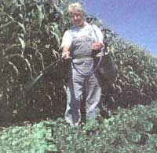

How to stay in the clear.
One bright morning during our first spring in the country, my wife and I sat on our orchard hill watching a bug-shaped truck with extended wings roar back and forth over our neighbor's fields. Clouds of chemical spray billowed from the outstretched "booms," and swirled with columns of dust kicked up by the balloon tires running at 20 miles per hour. It finished quickly and moved on to the next field, leaving behind a fog drifting in the steady May breeze across our lower pasture. Ominous curds of white foam lay in stripes on the freshly tilled soil.
Few would argue the virtue of avoiding contact with farm chemicals-the days are gone when state officials will offer to drink a Malthion cocktail on the evening news to prove its benign effects, as they did in California during the medfly scare a few years ago. Although a great deal of regulation exists governing the use of farm chemicals, the only practical protection for t hose wishing to avoid them is to learn the nature of the pollutants, how and when they will be applied, and to develop a friendly working relationship with those using the chemicals. In spite of the Clean Water Act, the EPA, and the many state and federal restrictions on chemical use, widespread lack of enforcement means we're pretty much on our own.
The burgeoning use of inorganic fertilizers and pesticides (primarily herbicides and insecticides) is both a cause and the effect of the gradual industrialization of farming over the last 50 years. Since 1945, the farming community has lost 3.5 million workers, the number of acres under cultivation has remained about the same, and output has increased an average of 2% per year, every year. Corn yields, for example, have risen from an average of 38.2 bushels per acre in 1930 to 118 bushels per acre in 1985. Our neighbor has pushed his corn as high as 200 bushels per acre in the bottomland he works along Ohio's Mad River, surely an unnatural act. It takes 75% less effort per acre to farm today than it did a generation ago.
The incentive to continue this increase in productivity does not originate strictly with growers; federal farm commodity programs have both encouraged farmers to maximize yields and penalized those whose yields have fallen. Federal standards for fruits and vegetables have reinforced market pressures to strive for huge, blemish-free produce at the expense of massive near-harvest pesticide use. As in any industrial process, the aim is to control the variables effecting production as much as possible, in particular, nutrients and competition from insects and other plants. Thus the amount of applied nitrogen fertilizer increased almost fivefold between 1960 and 1981. Corn alone accounts for 44% of total nitrogen application. Estimates of how much nitrogen is actually used by the plants range from 20 to 70%, depending on soil type and the weather. Most of the balance leaches away in the rain.
Between 1971 and 1982, total herbicide use more than doubled, accounting for more than 90% of all pesticides applied. The chemical industry sells more than $4 billion worth of these pesticides each year. In Ohio, the first sign of spring is the barrage of slick, prime-time herbicide ads on network television.
Not everyone is at equal risk, however. Over 90% of all pesticides are applied to just four crops: corn, soybeans, wheat-and cotton. If you live near a farm in the Midwest or South, chances are you are downstream or downwind from an operation growing one of the above. Most pesticides and fertilizers will be applied in the spring. If you lived next to a cornfield in 1971, there was a 40% chance that it would be sprayed with pesticide; by 1986, your chances of a spray had shot up to 95%. Although it is impossible to generalize about the hazard posed by farm chemicals, one rule of thumb is always safe to follow: your risk is proportional to a chemical's toxicity and your cumulative lifetime exposure to the chemical.
Because few farmers can invest the many thousands of dollars needed for sophisticated testing and spraying equipment required to accurately apply chemicals at the recommended rates, it is common for those who manage their own applications to overseason the soup, often significantly. More and more farmers are delegating a share of this work to specialists-"custom applicators" whose primary business is to sell and apply the desired fertilizer/pesticide mixes. The additional care that custom applicators take in soil testing and metering application rates is often offset by the fact that they are paid piecework, by the acre. They won't waste chemicals, but they won't waste time either. A friend of mine who works as agronomist for a local custom applicator tells me it is common practice for the spray rig operator to finish a job by "flushing the booms" on a nearby fencerow, dumping many gallons of solution rather than taking it back to a proper disposal facility.
Farm chemicals will cross your property lines in the water and in the air. The more volatile agents in warmer weather can drift in vaporous clouds, even in the absence of wind. A friend of ours woke one morning after a custom applicator had sprayed "Command" (a herbicide that my custom-applicator friend calls "a mover") next to his woodlot, to find all the trees along the fencerow transformed into ghostly terminal cases, stripped of their chlorophyll by the chemical. The manufacturer warns that this type of chemical should never be sprayed in winds exceeding five miles per hour, a difficult rule to follow for a spray rig traveling at 15-20 mph.
By far the larger problem, however, is water contamination. Over 97% of all rural water comes out of the ground. Much of the 30-80% of applied nitrogen not taken up by the crops will leach into ground-water in the form of nitrates. Many farm belt cities now post "nitrate warnings" during wet spring weather when levels in the municipal supplies are elevated. Many common pesticides are classified by the EPA as "leachers" that will migrate into water supplies-particularly Atrazine, a suspected oncogen, Alachlor, classified by the EPA as a probable human carcinogen, and Metolachlor. Although regulations dictate that such leachable compounds not be applied within 60 feet of an intermittent stream or open water, anyone who has walked the fields of the Midwest knows that there is often a ditch, a creek, or a stream much closer than that.
The health risks from exposure to such chemicals has not been determined, but one 1986 study by the National Cancer Institute found a 600% greater risk of developing non-Hodgkin's lymphomas among Kansas farmers exposed to herbicides at least 20 days per year than in the nonfarm population. There are others. Most farmers simply ignore the risks. When the workers at my agronomist friend's custom application business were asked by the EPA to submit to urine testing for herbicides, they complied. But not one of them would listen to the results.
The many macho trade names of the products are aliases for relatively few poisons. "Bullet" is a mixture of Alachlor and Atrazine; "Bicep," Atrazine and Metolachlor; "Lasso" is primarily Alachlor. "Crossbow," a common brush killer, contains 2,4-D, a chemical cousin of Agent Orange. Paradoxically, current "conservation," or low till/no-till practice requires that even higher concentrations of chemicals be used. It is common practice for soybean growers to "burn down" all growth before planting with a mixture of “Roundup" and 2,4-D or "Gramoxone Extra," which contains Paraquat-the herbicide used by drug enforcement efforts in the 70s to keep America safe from encroaching marijuana fields.
There is every reason to expect that industrial approach farming will increasingly be the norm. Smaller farms are being gobbled up by larger operations at a growing rate-the average farm size almost tripling over the last several decades. Given enough diesel-fired horsepower and help
from the chemical industry, it's possible for one farmer to tend close to a thousand acres. And while statistics show that the total tonnage of farm chemicals used has been declining for several years, it is only because the newer chemicals are more potent, requiring less per acre.
Most important, stay on good terms with your chemical-using neighbors. Farmers know it is good business to be sensitive to the concerns of neighbors. Ask them to let you know when and what they will be spraying so you can avoid entering contaminated areas. If you are downwind, make sure you button up your house during applications. You can afford to be more assertive with a custom applicator. Many responsible companies are attempting to stay ahead of public concern and will be responsive to your inquiries. Make sure your neighbor understands that you want to keep your property as chemical free as possible, but don't bother debating the whys and wherefores; most farmers equate chemical-intensive techniques simply with staying in business.
Have your well water tested. Many pesticides will not show up in standard testing, but if you find elevated nitrate levels or any of the common pesticides, you can probably assume the presence of all the leachable chemicals used locally. If you discover a problem, invest in a good filter for your drinking and cooking water. The activated carbon filters you'll find at the local hardware have not been shown to be effective against many of the common chemicals. Only an expensive "reverse-osmosis" (RO) filter can take care of everything, producing essentially distilled water. They start at about $150. You can buy ROs from dealers specializing in water treatment as well as through the mail.
In short, be friendly, be proactive, be informed. Once I learned that the white foam left on my neighbor's field last May was nothing more than soap suds used to mark the rows, I could be alert to the real danger-the unseen risks in the water flowing from my own tap, on the grass in my own backyard, even in the air circulating through my own house. That knowledge is a first step toward the safe and quiet life we all seek in the country.
If your chemical-slinging neighbor doesn't respond to a chat over the back fence when you express your concerns about staying pesticide free, you may want to consider turning the crank on the government regulatory machinery for some protection.
“At the EPA," David Stangel of the Agricultural Branch, Office of Compliance in Washington told me, "we like to say that the label is the law. That is, any deviation from the written instructions and restrictions for application on the label is a violation of FIFRA (The Federal Insecticide, Fungicide, and Rodenticide Act). Applicators can be fined $5000 per offense, but usually we issue a warning the first time. Actually, in most states, it's the department of agriculture that is responsible for enforcement. EPA only prosecutes where the violation has occurred on federal or tribal land, or if state policies make it difficult for the local agencies to proceed."
Since my own state, Ohio, is a typical small-farm, corn-wheat-soybeans patchwork, I began probing the Buckeye bureaucracy to learn how it wields the regulatory stick over the thousands of Ohio farmers. The Ohio Department of Agriculture asks its 10 field inspectors to monitor not only the farm use of pesticides, but all other commercial uses as well-everything from pest control services to golf courses, lawn services, etc. They conduct random drive-by inspections and respond to citizen complaints. Tom Harrison of the ODA Pesticide Regulation Section says that the number-one gripe is " I paid my money but the termites didn't die." Harrison knew about the FIFRA too. "The state cooperates with the EPA to enforce it,"
he explained. "State regulators must be at least as strict as FIFRA." Ohio receives between 60 and 80 agricultural complaints per year. "Airborne drift is our number-one farm problem," he told me. "People call and tell us that their neighbor sprayed and now their tomato patch has died. Our investigators must take great care collecting evidence so that it will be admissible in court." When they find a violation, Ohio usually responds with an escalating tier of penalties. The first time, the farmer receives a letter of warning. The next offense may bring civil penalties of $200-300. Finally, for frequent or flagrant violators, Ohio will seek criminal penalties. The Buckeye State usually prosecutes no more than five or ten cases per year.
"The biggest hammer," Harrison suggested, "is the threat of a civil case brought by a citizen after the state has successfully prosecuted." A first offense in Ohio is only a second degree misdemeanor, but an award for punitive damages can be substantial. Of course, specific loss must be demonstrated, and a fear of illness-even from exposure to cancer-causing chemicals-however reasonable, will not be cause for damages.
I asked him whether Ohio was enforcing the Federal Worker Protection Act. "Remember that the Worker Protection Standards were written primarily to protect migrant workers harvesting fruit and table crops," Harrison explained. "Now that those regulations have been extended to row-crop agriculture (corn, soybeans, wheat, cotton), it will be hard for farmers not to violate them. According to Stangel at the EPA, the National Association of State Departments of Agriculture lobbied hard in the last Congress to have many provisions of the Worker Protection Standards indefinitely postponed. He expects the new Republican leadership to lend a much more sympathetic ear to arguments for stalling enforcement. Back in Ohio, Harrison also argues for less regulation. "My feelings are that the standards are a bit overblown. Just the booklet on how to comply runs 120 pages. You can't expect farmers to read all that stuff."
Citizen complaints, however, are hot potatoes for a bureaucracy. If you have a problem that you can't resolve with your neighbor, the first place to call is your state department of agriculture. They will interview you to be sure that a violation has occurred. They will send an inspector and collect evidence. They will probably fire off a stern letter to the violator warning him to be more careful in the future. If he won't, well...just hope that he will.
|
 JHON COLWELL/GRAND HEILMAN PHOTOGRAPHY |
J. NETHETON/THE IMAGE BANK |
|